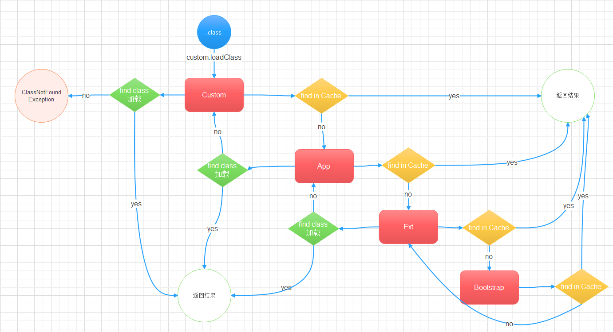

jvm 基础结构

编写好的每个.java代码文件经过编译后成为class文件，运行程序时这些class文件连同它所有依赖的库，都会被类加载器加载到内存，然后再对代码class文件进行即时编译或解释。
对于频繁用到的代码段，jvm会编译一次，后续执行会更快，其他代码会使用字节码解释器进行解释，以提高跨平台性。
做为跨语言的平台，JVM是一套语言规范，只要能按照规范生产JVM要求的class文件，就可以在JVM里执行代码，所以JVM不只是可以用java语言，目前以及有很多语言实现了在jvm中运行：
jvm给出了不同操作系统的实现，屏蔽了系统的个性，使各种jvm中的语言得到了跨平台的特性。
JVM可以想象成一台虚拟出来的一台计算机，他有自己的：
- 字节码指令集（汇编语言）
- 内存管理： 栈，堆，方法区等
常见的JVM实现
JDK JRE JVM 关系
class 文件结构
整个class文件就是一个二进制字节流，由java虚拟机来解释，其中类型包括u1, u2, u4, u8 和 _info(表类型)
这里u指无符号整数，u1就是指一个字节的无符号整数，对应u2,u4,u8相当于几个字节的无符号整数
class文件结构主要包含一下一些字段：
- Magic Number， CA FE BA BE 头文件表示，表示这是java编译后的class文件
- Minor Version， 大版本号
- Major Version， 小版本号
- constant_pool_count ,常量池个数
- constant_pool， 个数为 常量池个数减一的常量池
- access_flags，修饰符，public,private，final，abstract 等等
- this_class，此class名称
- super_class，父类名称
- interfaces_count，实现接口的个数
- interfaces，实现的接口
- fields_count， 属性的个数
- fields，具体有哪些属性
- methods_count，方法的个数
- methods，具体有哪些方法
- attributes_count，其他附加属性的个数
- attributes，其他附加的属性有哪些
编译一个java文件：
1
2
|
public class testClass {
}
|
然后打开它的class文件，十六进制：
1
2
3
4
5
6
7
8
9
10
11
12
13
14
15
16
|
cafe babe 0000 0031 0010 0a00 0300 0d07
000e 0700 0f01 0006 3c69 6e69 743e 0100
0328 2956 0100 0443 6f64 6501 000f 4c69
6e65 4e75 6d62 6572 5461 626c 6501 0012
4c6f 6361 6c56 6172 6961 626c 6554 6162
6c65 0100 0474 6869 7301 000b 4c74 6573
7443 6c61 7373 3b01 000a 536f 7572 6365
4669 6c65 0100 0e74 6573 7443 6c61 7373
2e6a 6176 610c 0004 0005 0100 0974 6573
7443 6c61 7373 0100 106a 6176 612f 6c61
6e67 2f4f 626a 6563 7400 2100 0200 0300
0000 0000 0100 0100 0400 0500 0100 0600
0000 2f00 0100 0100 0000 052a b700 01b1
0000 0002 0007 0000 0006 0001 0000 0007
0008 0000 000c 0001 0000 0005 0009 000a
0000 0001 000b 0000 0002 000c
|
可以分析出结构图：
常量池是从1号开始，0号保留。
使用javap命令查看class结构：
1
2
3
4
5
6
7
8
9
10
11
12
13
14
15
16
17
18
19
20
21
22
23
24
25
26
27
28
29
30
31
32
33
34
35
36
37
38
39
40
41
42
43
44
|
C:\Users\Thunk>javap -v D:\Projects\jvm-demo\target\classes\testClass.class
Classfile /D:/Projects/jvm-demo/target/classes/testClass.class
Last modified 2021年7月13日; size 252 bytes
MD5 checksum c24b68ede87f05f0a8c3ed78defc82aa
Compiled from "testClass.java"
public class testClass
minor version: 0
major version: 49
flags: (0x0021) ACC_PUBLIC, ACC_SUPER
this_class: #2 // testClass
super_class: #3 // java/lang/Object
interfaces: 0, fields: 0, methods: 1, attributes: 1
Constant pool:
#1 = Methodref #3.#13 // java/lang/Object."<init>":()V
#2 = Class #14 // testClass
#3 = Class #15 // java/lang/Object
#4 = Utf8 <init>
#5 = Utf8 ()V
#6 = Utf8 Code
#7 = Utf8 LineNumberTable
#8 = Utf8 LocalVariableTable
#9 = Utf8 this
#10 = Utf8 LtestClass;
#11 = Utf8 SourceFile
#12 = Utf8 testClass.java
#13 = NameAndType #4:#5 // "<init>":()V
#14 = Utf8 testClass
#15 = Utf8 java/lang/Object
{
public testClass();
descriptor: ()V
flags: (0x0001) ACC_PUBLIC
Code:
stack=1, locals=1, args_size=1
0: aload_0
1: invokespecial #1 // Method java/lang/Object."<init>":()V
4: return
LineNumberTable:
line 7: 0
LocalVariableTable:
Start Length Slot Name Signature
0 5 0 this LtestClass;
}
SourceFile: "testClass.java"
|
方法实现是在Code：里，根据JVM规范，可以从JVM规范第7章中看到，java虚拟机会根据这里的java汇编指令表，查找出对应class文件里十六进制数对应的哪个指令：
类加载，初始化
加载过程：
- Loading
- Linking
- Verification
- Preparation
- Resolution
- Initializing
首先将class文件加载到内存，然后进入linking过程，linging包含三个步骤，verification负责校验此文件是否为有效的class文件，然后进入preparation阶段，此阶段为将class中静态变量赋默认值，然后进入resolution阶段，resolution会将class文件中字符串常量里的符号引用转换为内存地址，可以直接访问到，最后进入第三个阶段initializing，此阶段静态变量会赋值为初始值，执行静态代码块。
ClassLoader
类加载器有四种：
- BootStrap 顶级类加载器,加载lib/rt.jar, charset.jar等核心类，C++实现
- Extension 加载扩展jar包，/jre/lib/ext/*.jar,或由-Djava.ext.dirs指定
- App 加载classpath指定内容
- Custom ClassLoader 自定义ClassLoader
JVM 通过这四种类加载器按需动态加载，采用双亲委派机制，从BootStrap到Custom ClassLoader逻辑上是父到子的关系，例如：BootStrap是Extension的父加载器，Extension是App的父加载器，但是他们并不是类上的继承关系。
1
2
3
4
5
6
|
System.out.println(String.class.getClassLoader());
System.out.println(sun.awt.HKSCS.class.getClassLoader());
System.out.println(sun.net.spi.nameservice.dns.DNSNameServiceDescriptor.class.getClassLoader());
System.out.println(testClass.class.getClassLoader());
System.out.println(sun.net.spi.nameservice.dns.DNSNameServiceDescriptor.class.getClassLoader().getClass().getClassLoader());
System.out.println(testClass.class.getClassLoader().getClass().getClassLoader());
|
结果：
1
2
3
4
5
6
|
null
null
sun.misc.Launcher$ExtClassLoader@6d6f6e28
sun.misc.Launcher$AppClassLoader@18b4aac2
null
null
|
可以看到输出为null的表示是最顶层的BootStrap类加载器。
类加载过程：
- 首先当一个类A被load到内存后，查看用户有没有自定义ClassLoader,如果有自定义ClassLoader，则在这个自定义的类加载维护的缓存中查找有没有加载过A，如果有加载过则不需要重复加载。
- 如果没有加载过，则查看父加载器App类加载器有没有加载过类A，如果有加载过，则无需再次加载，直接返回。
- 如果在App类加载器中没有查到则查找Extension中是否有加载过，如果有加载过，则无需加载，直接返回。
- 如果在Extension中没有找到则在BootStrap中查看有没有加载过，如果有，则无需加载，直接返回。
- 如果在BootStrap中找到，则直接返回，如果没有找到，则委托Extension开始时加载。
- Extension查看A是否在自己的加载范围中，如果有则加载，如果没有，则委托App加载器去加载。
- App加载器查看A是否在自己的加载范围内，如果在则加载，如果不在，则委托Cumtom ClassLoader加载。
- Custom ClassLoader 直接去加载A，如果未能加载，则包异常ClassNotFound
图示：

查看类加载器所加载的范围：
1
2
3
4
5
6
7
8
|
String pathBoot = System.getProperty("sun.boot.class.path");
System.out.println(pathBoot.replace(";",System.lineSeparator()));
System.out.println("------------------------------------------------");
String pathEx =System.getProperty("java.ext.dirs");
System.out.println(pathEx.replace(";",System.lineSeparator()));
System.out.println("------------------------------------------------");
String pathApp = System.getProperty("java.class.path");
System.out.println(pathApp.replace(";",System.lineSeparator()));
|
结果：
1
2
3
4
5
6
7
8
9
10
11
12
13
14
15
16
17
18
19
20
21
22
23
24
25
26
27
28
29
30
31
32
33
34
35
36
37
|
D:\Program Files\Java\jdk1.8.0_151\jre\lib\resources.jar
D:\Program Files\Java\jdk1.8.0_151\jre\lib\rt.jar
D:\Program Files\Java\jdk1.8.0_151\jre\lib\sunrsasign.jar
D:\Program Files\Java\jdk1.8.0_151\jre\lib\jsse.jar
D:\Program Files\Java\jdk1.8.0_151\jre\lib\jce.jar
D:\Program Files\Java\jdk1.8.0_151\jre\lib\charsets.jar
D:\Program Files\Java\jdk1.8.0_151\jre\lib\jfr.jar
D:\Program Files\Java\jdk1.8.0_151\jre\classes
------------------------------------------------
D:\Program Files\Java\jdk1.8.0_151\jre\lib\ext
C:\WINDOWS\Sun\Java\lib\ext
------------------------------------------------
D:\Program Files\Java\jdk1.8.0_151\jre\lib\charsets.jar
D:\Program Files\Java\jdk1.8.0_151\jre\lib\deploy.jar
D:\Program Files\Java\jdk1.8.0_151\jre\lib\ext\access-bridge-64.jar
D:\Program Files\Java\jdk1.8.0_151\jre\lib\ext\cldrdata.jar
D:\Program Files\Java\jdk1.8.0_151\jre\lib\ext\dnsns.jar
D:\Program Files\Java\jdk1.8.0_151\jre\lib\ext\jaccess.jar
D:\Program Files\Java\jdk1.8.0_151\jre\lib\ext\jfxrt.jar
D:\Program Files\Java\jdk1.8.0_151\jre\lib\ext\localedata.jar
D:\Program Files\Java\jdk1.8.0_151\jre\lib\ext\nashorn.jar
D:\Program Files\Java\jdk1.8.0_151\jre\lib\ext\sunec.jar
D:\Program Files\Java\jdk1.8.0_151\jre\lib\ext\sunjce_provider.jar
D:\Program Files\Java\jdk1.8.0_151\jre\lib\ext\sunmscapi.jar
D:\Program Files\Java\jdk1.8.0_151\jre\lib\ext\sunpkcs11.jar
D:\Program Files\Java\jdk1.8.0_151\jre\lib\ext\zipfs.jar
D:\Program Files\Java\jdk1.8.0_151\jre\lib\javaws.jar
D:\Program Files\Java\jdk1.8.0_151\jre\lib\jce.jar
D:\Program Files\Java\jdk1.8.0_151\jre\lib\jfr.jar
D:\Program Files\Java\jdk1.8.0_151\jre\lib\jfxswt.jar
D:\Program Files\Java\jdk1.8.0_151\jre\lib\jsse.jar
D:\Program Files\Java\jdk1.8.0_151\jre\lib\management-agent.jar
D:\Program Files\Java\jdk1.8.0_151\jre\lib\plugin.jar
D:\Program Files\Java\jdk1.8.0_151\jre\lib\resources.jar
D:\Program Files\Java\jdk1.8.0_151\jre\lib\rt.jar
D:\Projects\jvm-demo\target\classes
D:\Program Files\JetBrains\IntelliJ IDEA 2019.2.4\lib\idea_rt.jar
|